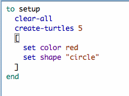

The Code tab is where the code for the model is stored. Commands you only want to use immediately go in the Command Center; commands you want to save and use later, over and over again, are found in the Code tab.
To determine if the code has any errors, you may press the “Check” button. If there are any syntax errors, the Code tab will turn red, the code that contains the error will be highlighted, and an error message will appear.
Switching tabs also causes the code to be checked, so if you just switch tabs, pressing the Check button first isn’t necessary.
To find a fragment of code in the procedures, click on the “Find” button in the Code toolbar and the Find dialog will appear.
You may enter a word or phrase to find, and optionally also a new word or phrase to replace it with. The “Ignore case” checkbox controls whether the capitalization must be the same to indicate a match.
If the “Wrap around” checkbox is checked, the entire Code tab will be checked for the phrase, starting at the cursor position. When it reaches the end it will return to the top, otherwise only the area from the cursor position to the end of the Code tab will be searched. The “Next” and “Previous” buttons will move down and up to find another occurrence of the search phrase.
“Replace” changes the currently selected phrase with the replace phrase and “Replace & Find” changes the selected phrase and moves to the next occurrence. “Replace All” will change all instances of the find phrase in the search area with the replace phrase.
When the Indent Automatically checkbox is selected, NetLogo will automatically
attempt to align your code in a logically structured format. For example, when
you open a set of square brackets “[” (perhaps after an if statement), NetLogo
will automatically add spaces so that the following lines of code are two spaces
further indented than the bracket. When you close the square brackets the
closing bracket will be lined up with the matching open bracket.

NetLogo will try to indent the code as you type, but you can also press the tab key anywhere on any line to ask NetLogo to indent the line immediately. Or, you can select a whole region of code and press the tab key to re-indent all of it.
To find a particular procedure definition in your code, use the “Procedures”
popup menu in the Code tab. The menu lists all procedures in the order they
appear in the file. To search for a particular procedure, use the search field
at the top of the popup. It will filter the list of procedures using fuzzy
matching as you type. Fuzzy match will include procedures whose names contain
the characters that you type in the order that they appear in the search field,
but the characters do not have to be right next to each other. For instance,
“fnn” will match"find-nearest-neighbors" and
“wolf-down-neighbor” but not “nearest-wolf-neighbor”. You may use
the arrow keys or mouse to select a particular procedure and enter or click to
jump to it. This can be a very convenient way to navigate your file. To
facilitate this, you can use the shortcut ctrl-g (cmd+g on Mac OS) to
access the procedures menu.
The “Shift Left”, “Shift Right”, “Comment”, and “Uncomment” items on the Edit menu are used in the Code tab to change the indentation level of your code or add and remove semicolons, which mark comments, from sections of code.
For more information about writing procedures, read Tutorial #3: Procedures and the Programming Guide.
Caution: The includes facility is new and experimental.
When you add the __includes keyword to a model a menu to the right of the procedures menu appears. This is the “Included Files” menu which lists all the NetLogo source files (.nls) included in this file. You can make this menu always visible using the Preferences dialog.
You can choose a file name from the menu to open a tab for that file, or you can
open a new or existing file using New Source File and Open Source File,
respectively.
Once you’ve opened new tabs they become accessible from the Tabs menu, and you can use the keyboard to move from tab to tab (Command + number on Mac, Control + number on other operating systems).